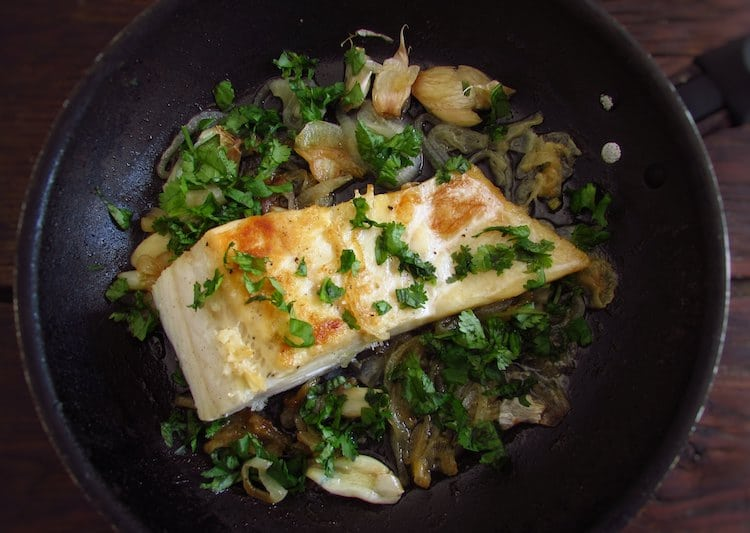

Caruaru
estamos
chegando!

A Casa de Seu Luiz é um projeto inspirado na força de trabalho do empresário Luiz Lacerda, que teve como marcas muito evidentes a lealdade, prudência e sagacidade. Primogênito, nascido em 05 de dezembro de 1924, no interior do Agreste Pernambucano (Boi Seco), teve a adolescência interrompida em razão da morte prematura do pai. A ele, coube a missão do sustento da mãe e dos dez irmãos. No banco de feira herdado pelo pai se iniciou no comércio, com a venda da carne de charque. Mas, logo cedo percebeu, que o mundo ia muito além da feira da terra natal, passando a estender os negócios.
